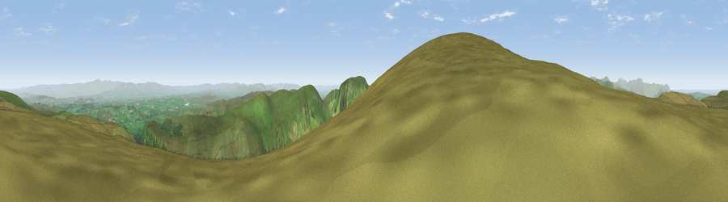

Viewpoint c10274_6913
#1223 in England · top 6% of its area beats it · —The view, rendered

A 360° render of this exact spot computed from the terrain model, tree cover and land cover — summer colours, afternoon light, calibrated against photographs of famous viewpoints. Real trees, hedges and buildings will differ in detail.
The panorama
Grey silhouette: terrain skyline in each direction (720 bearings, Earth curvature and refraction included). Dashed green: skyline with trees (+15 m) and buildings (+8 m) as obstacles. Blue strip: how far the ground is visible on each bearing.
Where the view opens
Wedge length = distance to the farthest visible ground on that bearing (vegetation-aware). Rings at 10, 25 and 50 km.
What fills the view
85% grassland · 8% water · 6% woodland ·
Angular shares of the visible panorama (visual magnitude), not map area. Landscape diversity 0.24 (0–1 Shannon).
Key numbers
More beautiful places nearby
The staircase of upgrades: each row has a higher view potential than everything closer. Driving times are estimates from straight-line distance, calibrated against real road routing — check an actual route before setting out.
| Place | Direction | Drive | Score |
|---|---|---|---|
| High Raise | WSW · 1 km | ~3 min | 79.4 |
| Viewpoint near Bampton | ENE · 1 km | ~4 min | 80.4 |
| High Street (summit) | SSW · 3 km | ~8 min | 82.6 |
| Viewpoint near Watermillock | N · 7 km | ~14 min | 83.5 |
| Viewpoint near Legburthwaite | W · 12 km | ~22 min | 83.8 |
| Viewpoint near Legburthwaite | W · 13 km | ~24 min | 84.5 |
| Old Man of Coniston | SW · 25 km | ~40 min | 85.2 |
| Skiddaw South Top | NW · 25 km | ~40 min | 85.8 |
54.51783, -2.83801 · source: screening · position refined by local search. Computed location — check access rights before visiting.